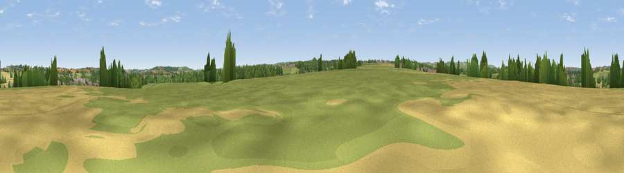

Folly Hill
#35494 in England · top 70% of its area beats it · near ClaptonThe view, rendered

A 360° render of this exact spot computed from the terrain model, tree cover and land cover — summer colours, afternoon light, calibrated against photographs of famous viewpoints. Real trees, hedges and buildings will differ in detail.
The panorama
Grey silhouette: terrain skyline in each direction (720 bearings, Earth curvature and refraction included). Dashed green: skyline with trees (+15 m) and buildings (+8 m) as obstacles. Blue strip: how far the ground is visible on each bearing.
Where the view opens
Wedge length = distance to the farthest visible ground on that bearing (vegetation-aware). Rings at 10, 25 and 50 km.
What fills the view
51% grassland · 23% cropland · 22% woodland · 4% built-up
Angular shares of the visible panorama (visual magnitude), not map area. Landscape diversity 0.50 (0–1 Shannon).
Key numbers
More beautiful places nearby
The staircase of upgrades: each row has a higher view potential than everything closer. Driving times are estimates from straight-line distance, calibrated against real road routing — check an actual route before setting out.
| Place | Direction | Drive | Score |
|---|---|---|---|
| Viewpoint near Stratton on the Fosse | S · 3 km | ~8 min | 61.0 |
| The Sleight | N · 5 km | ~12 min | 68.8 |
| Viewpoint near Chelwood | N · 6 km | ~13 min | 70.6 |
| Viewpoint near Oakhill | S · 8 km | ~16 min | 71.3 |
| Viewpoint near West Horrington | WSW · 10 km | ~19 min | 73.2 |
| Viewpoint near Wookey Hole | WSW · 12 km | ~22 min | 73.5 |
| Viewpoint near Kelston | NNE · 15 km | ~26 min | 74.2 |
| Viewpoint near North Stoke | NNE · 16 km | ~28 min | 75.4 |
51.28302, -2.50338 · source: osm peak · position refined by local search. Computed location — check access rights before visiting.